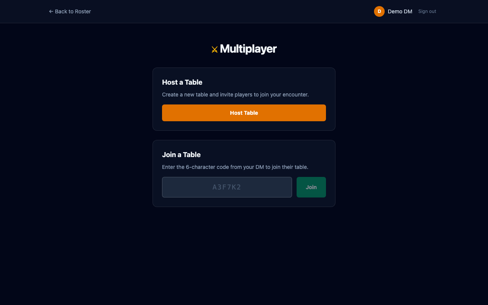
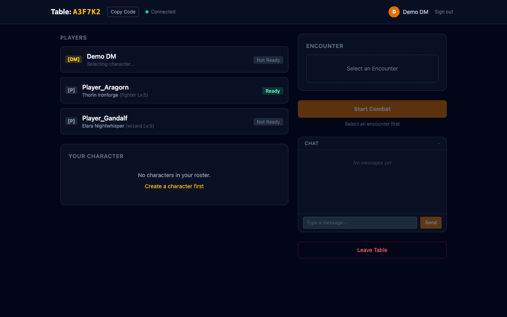
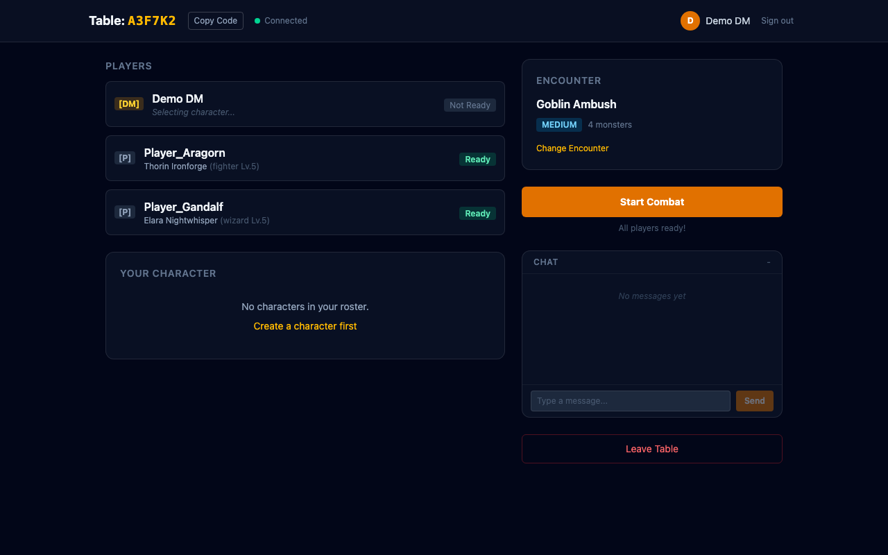
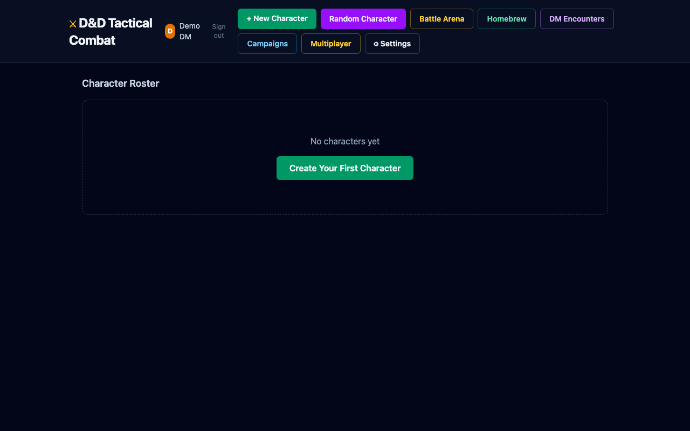

Feature branch: feat/phase-9a-multiplayer-foundation | Closes #41–#47
The multiplayer foundation adds real-time lobby infrastructure powered by Supabase Realtime. Players can host or join tables using a 6-character code, select characters, pick encounters, and launch into combat together.
New Multiplayer page accessible from the roster. The host creates a table and gets a shareable 6-character code. Other players enter the code to join.

Once in a table, all players see a live lobby with presence tracking. Each player has a role badge ([DM] or [P]), character info, and ready state. The host sees encounter selection and Start Combat controls on the right.

When all players are ready and an encounter is selected, the Start Combat button activates. The encounter card shows name, difficulty badge, and monster count.

The multiplayer entry point is accessible directly from the character roster page.

combat_sessions and session_participants tables with full RLS policiesmultiplayer.ts) for broadcast + presencecloudDb.tsmultiplayerStore — Zustand store managing full lobby lifecycle/multiplayer, /table/:code) and nav integration